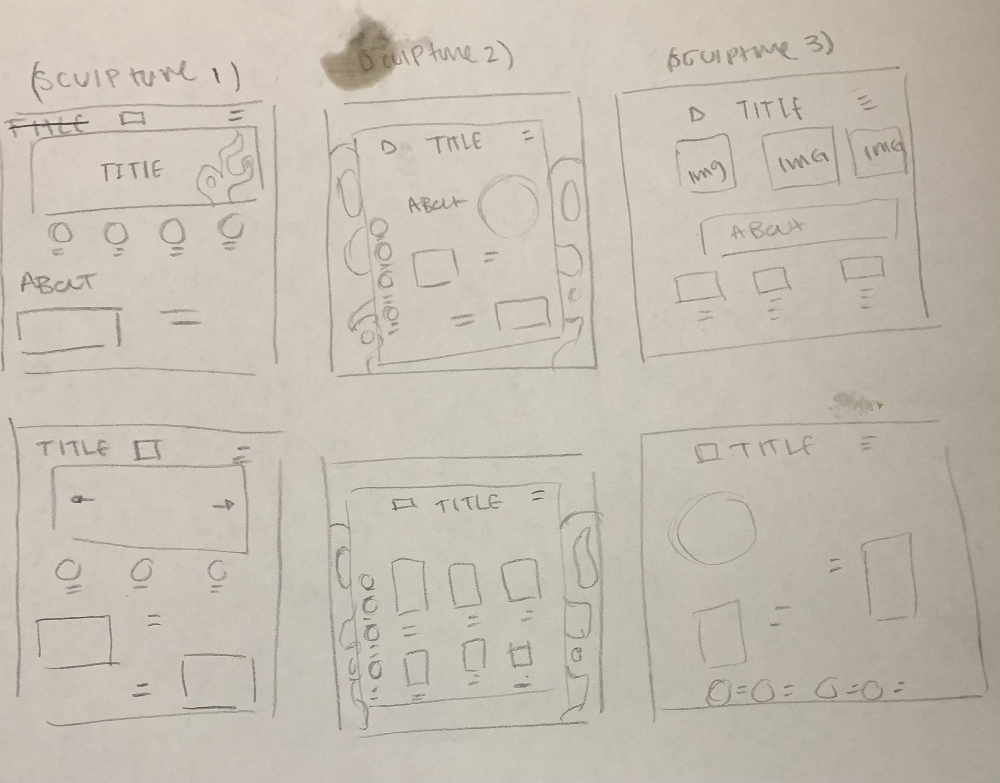
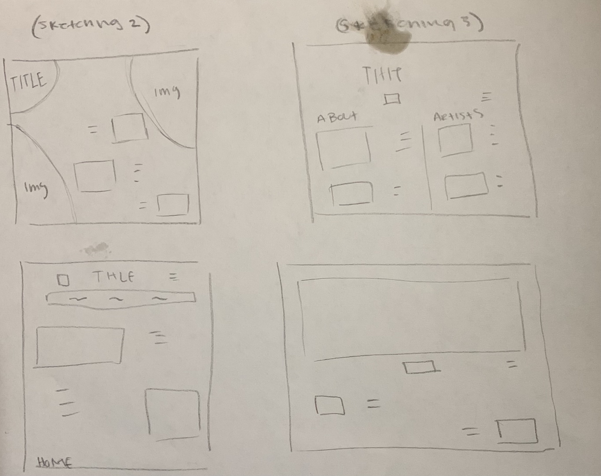
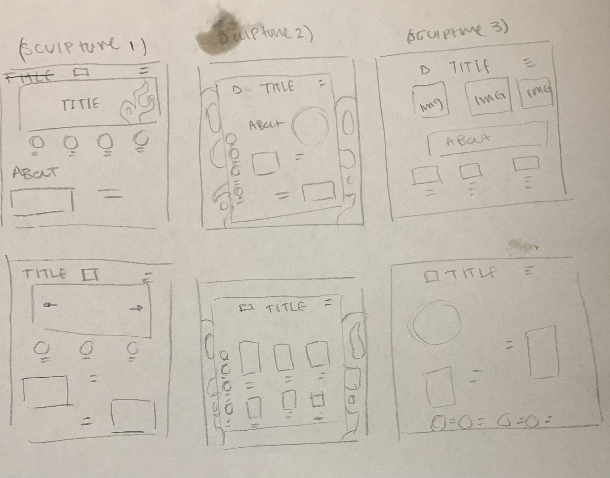
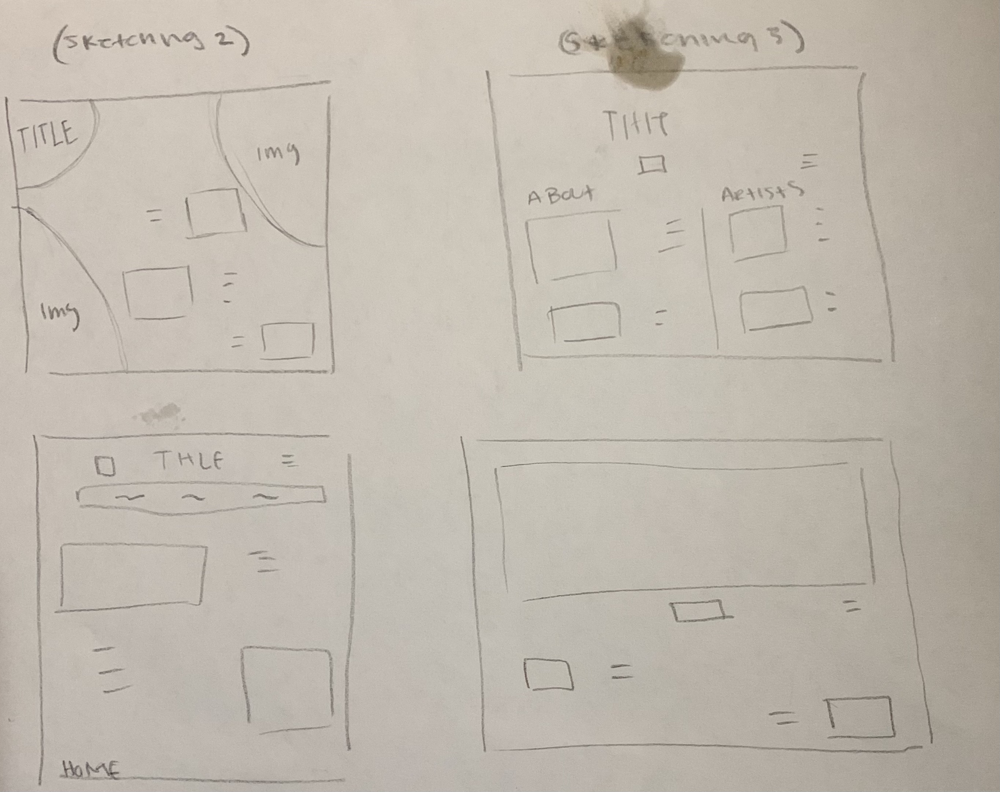
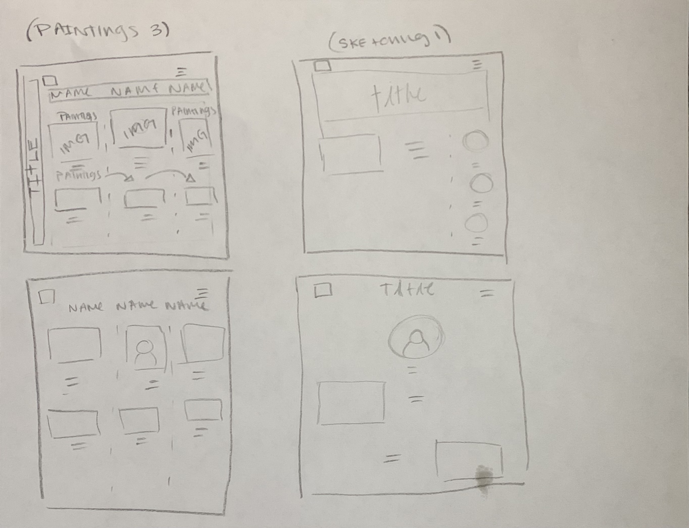
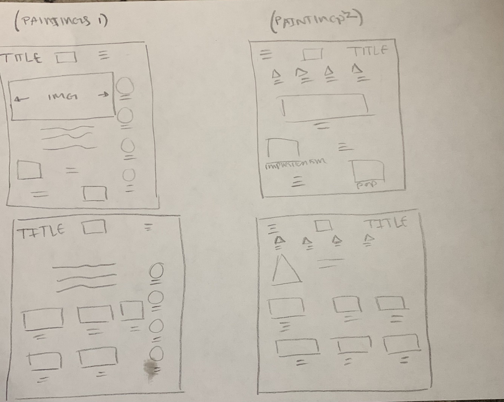
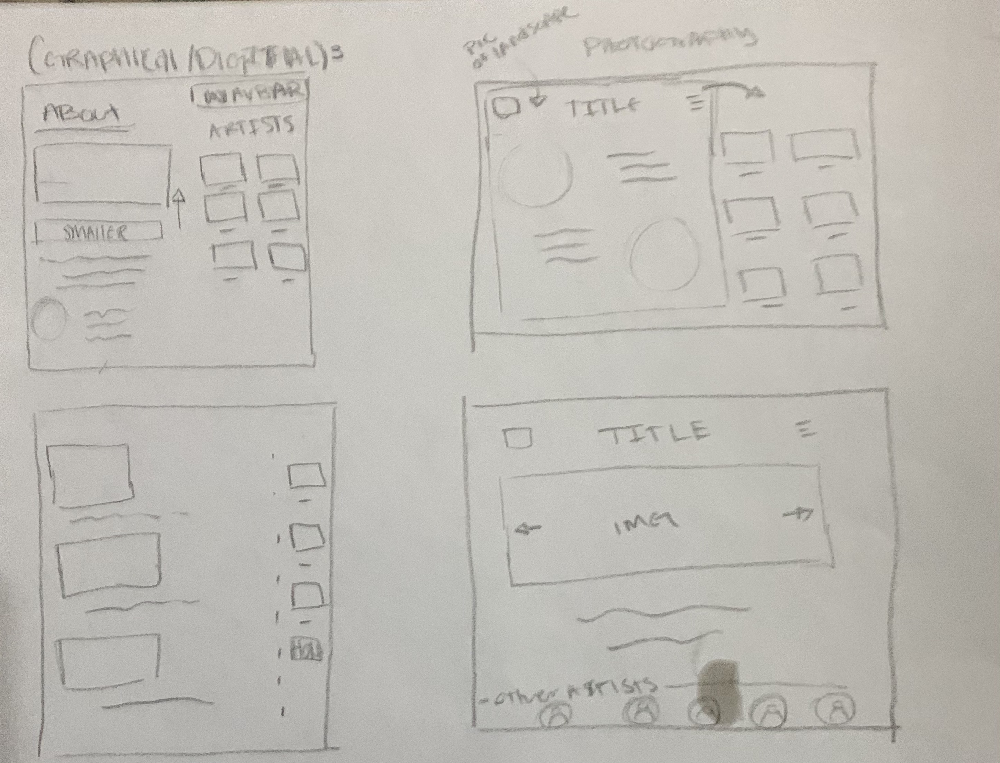
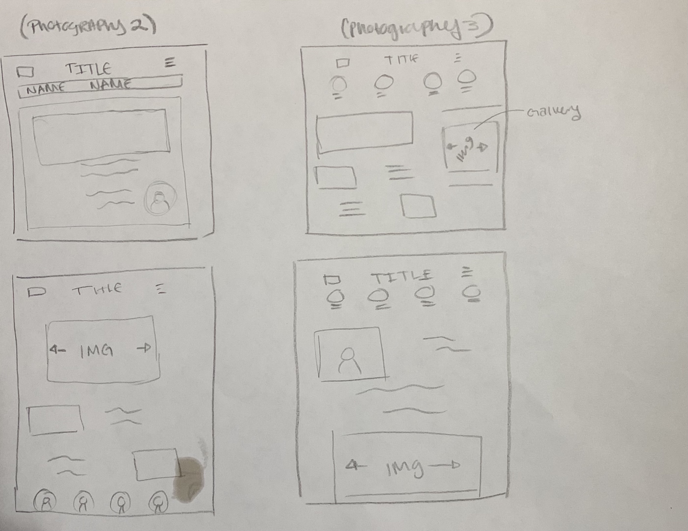

Challenge
In this lab, We had to create sketches for my teams project website. We need to draw sketches of how our website's layout.
 In this lab, We had to create sketches for my teams project website. We need to draw sketches of how our website's layout.
 I did not really have a lot of difficulties with this lab but I did have two. One being on what the layouts are going to look like for each of the ideas we had. I tried my best to stray off of websites to keep them original but I was struggling so I did use some for reference. The other issue I was having is that I was spending way to much time on one sketch when I should have spent at least 2 mins. Later on I was noticing it so I did not spend much more time on them.
 I would say that I am pretty satisfied with the sketches that I made. I tried to make them different and adding shapes for images and having the titles placed differently. I would like to draw a logo. Overall, I enjoyed designes the website layouts.
 